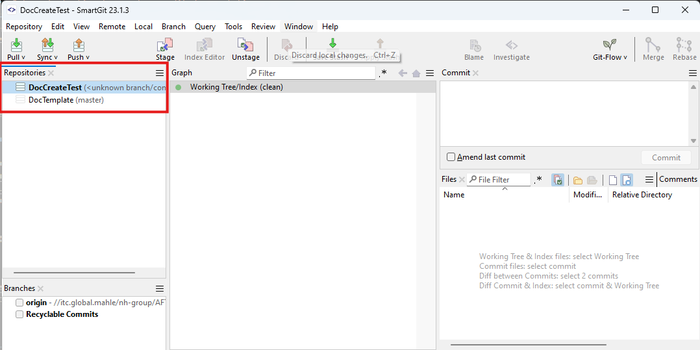
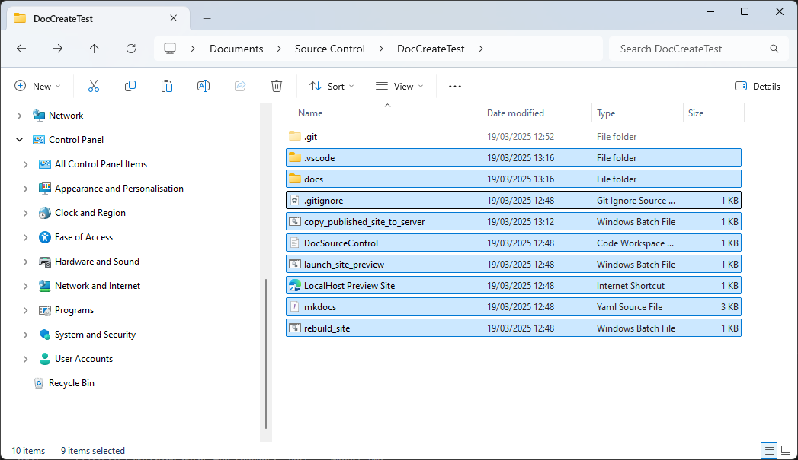

Setup🔗
Category🔗
The next sections describe the steps required before editing documentation that is:
Existing🔗
Clone your chosen repository of existing documentation, normally found in:
Preview🔗
To begin editing, it's nearly always helpful to launch the site preview.
Preview the documentation site to see edits/changes live. Run launch_site_preview.bat and then open the link preview_site.url. The preview site will update whenever any changes are saved in the files.
Preview 1 at a time
You can only preview one documentation site at a time.
What is launch_site_preview.bat?
This batch file simply runs the command: mkdocs serve. This command builds a temporary website from the current doc files and makes it available on the loopback server (127.0.0.1) at port 8000. Helpfully, any changes to the source files trigger a temporary website rebuild and refresh of the browser also.
Open the new repository directory in a text editor such as VSCode to begin editing.
Ensure any changes are committed/pushed when appropriate.
New🔗
1. Clone the template🔗
We have a full template documentation project to speed setup. Clone this repository:
2. Create a new, empty repo🔗
Separately Create a New repository for your new documentation project.
DocSomeName: Naming convention
Our existing documentation repositories are all called DocSomething. This helps distinguish documentation projects from software projects in AFT Development Project/Source Control.
clone your new, empty repository. You should now have a local, empty repository for the new documentation and the template repository also cloned locally.

3. Copy template new🔗
Copy the contents of the template repository to the new repository, ignoring the .git folder in both.

The cloned template repository can optionally be removed as it is no longer needed.
4. Open Preview🔗
Take a look at the preview section above.
Complete🔗
Move on to Editing if the required steps are successful.